Charging System - Alternator Testing With GR8 Tester
12-001February 27, 2013
Applies To:
2005-14 Models - ALL
Alternator Testing With the GR8 Alternator/Starter Tester (AST)
Service Manual Update: Alternator Testing, dated September 14, 2011)
(Supersedes 12-001, dated January 27, 2012, to revise the information marked by the black bars and asterisks)
REVISION SUMMARY
*^ Under BACKGROUND, information was changed.
^ Under REQUIRED TOOLS, Information was changed.
^ Under WARRANTY INFORMATION, information was changed.
^ Under ALTERNATOR TEST, information was changed.*
BACKGROUND
*The GR8 AST is capable of testing alternators. All warranty repairs to the alternator require your dealership to use the GR8 AST.*
REQUIRED TOOLS
GR8 Alternator/Starter Tester (AST):
* P/N MTRA270A (AST Module only)
Go to iN > Service > Service Bay > Diagnostic
Tools Software Versions for the latest GR8 AST
software version.*
TOOL REQUIREMENTS
The GR8 software must be updated within 3 days of a new software update release.
Refer to SIB 09-034, GR8 Battery Diagnostic Station Update Information.
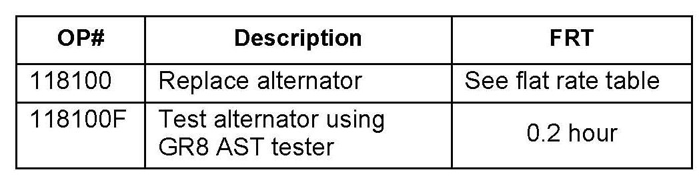
WARRANTY CLAIM INFORMATION
Failed Part: Use original equipment part
Defect Code: 03214
Symptom Code: 06702
Skill Level: Repair Technician
DTC: Enter 15-digit test code into claim
^ Alternator warranty claims are not accepted without the 15-digit test code from the GR8 AST.
*^ If any alternator claim is returned unpaid it may have one of the following codes:
- Error code 2020 - one or more DTC fields are incomplete.
- Error code 202 - no problem found on alternator test.
- Error code 2022 - alternator test was done before repair order was opened.
- Error code 2023 - repair order was closed before alternator test was done.*
^ For all DTC codes resulting in alternator replacement, you must do the alternator test to obtain the 15-digit test code.
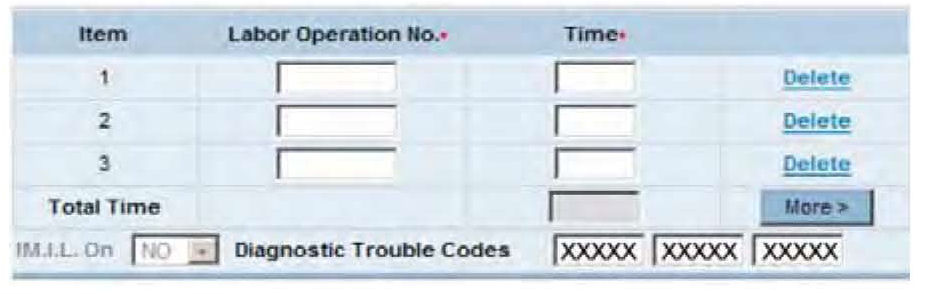
^ Enter the 15-digit code into warranty claim Diagnostic Trouble Codes fields one, two, and three.
^ The alternator test printout that states REPLACE ALTERNATOR must be attached to the repair order or the warranty claim will be subject to debit.
^ The alternator claim will be returned to the dealership unpaid with an error code if the tester print-out does not state REPLACE ALTERNATOR.
^ Any alternator replaced must have a warranty claim tag attached to it.
^ If you have an alternator under warranty that needs replacement for a non-electrical defect (noise or seized), contact your District Parts and Service Manager (DPSM) for help.
REPAIR PROCEDURE ALTERNATOR TEST
1. Ask the client to describe the events that led up to the problem. Many charging system complaints are caused by leaving the headlights or interior lights
on, headlight flicker (a normal condition), or installing aftermarket accessories with a high parasitic draw that drains the battery.
2. Visually inspect the alternator and battery cables and grounding straps to confirm that the connections are clean and tight. If there are any damaged parts or loose connections, repair them as needed.
3. Place the GR8 AST by the driver's side front tire.
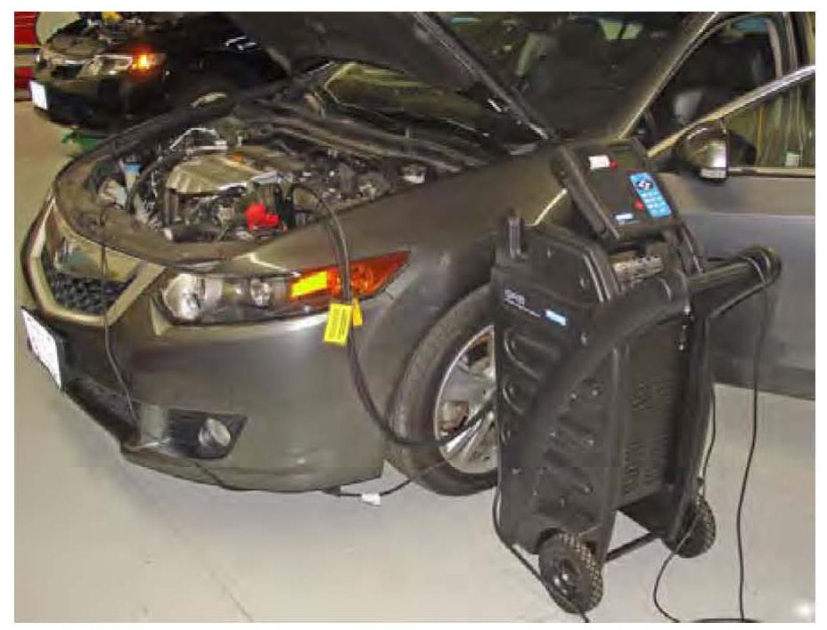
NOTE:
Make sure the engine is at normal operating temperature before testing. If not, hold the engine speed at 3,000 rpm in Park (P) or Neutral (N) until the radiator fan comes on twice, then let it idle.
4. With the engine OFF, turn the GR8 ON, and connect it to the vehicle:
^ Connect the negative (-) lead to the negative battery terminal.
^ Connect the positive (+) lead to the positive battery terminal.
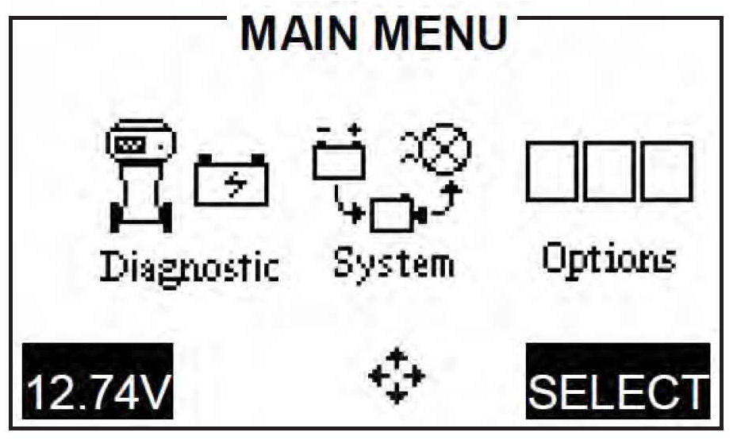
5. In the main menu, scroll over to the SYSTEM icon, and press the SELECT key.
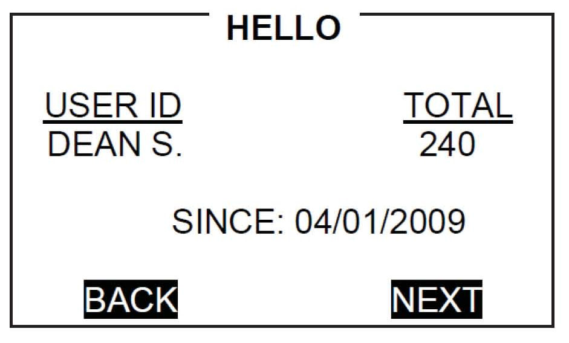
6. Use the arrow or numerical keys to select TECHNICIAN ID, and press NEXT to continue.
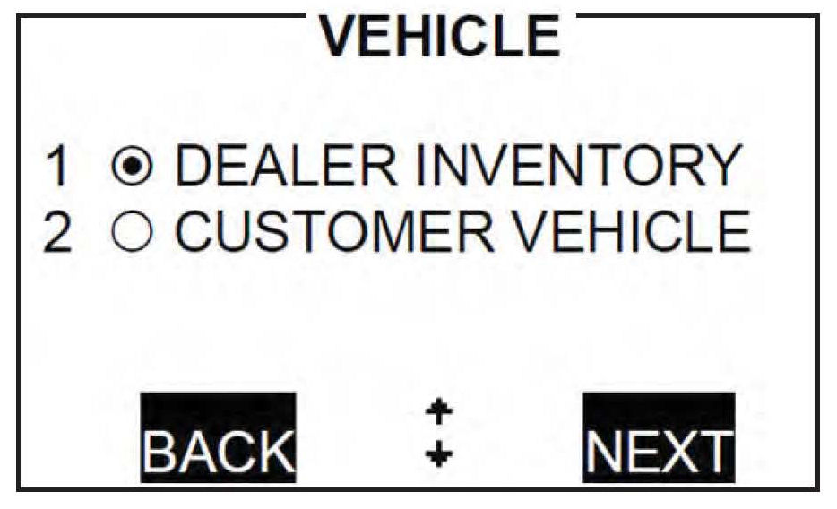
7. Select the type of vehicle being tested.
8. When prompted, verify that the test cables and clamps are in good working order, and press NEXT to continue.
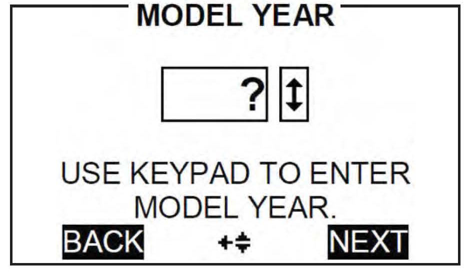
9. Scroll up or down to select the model year of the vehicle being tested, and press NEXT to continue.
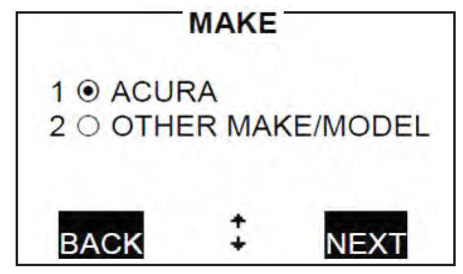
10. Select Acura for the vehicle being tested, and press NEXT to continue.
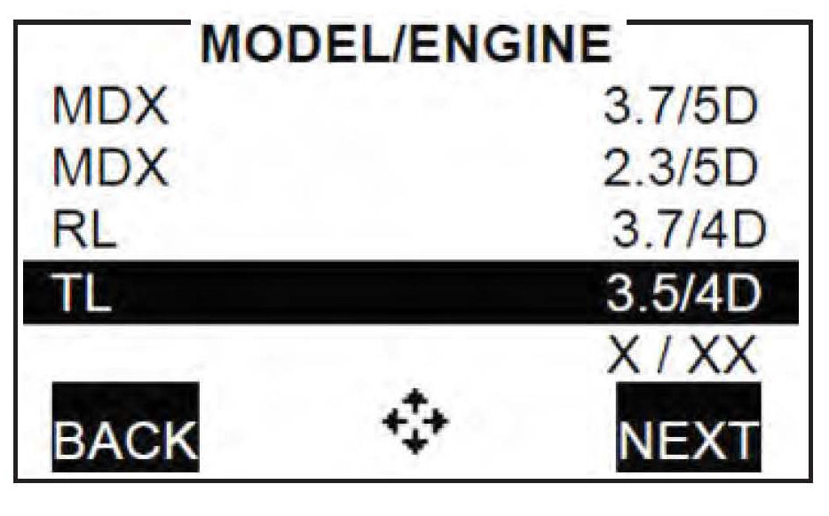
11. Scroll through the list and select the Acura MODEL/ENGINE you are testing, and press NEXT to continue.
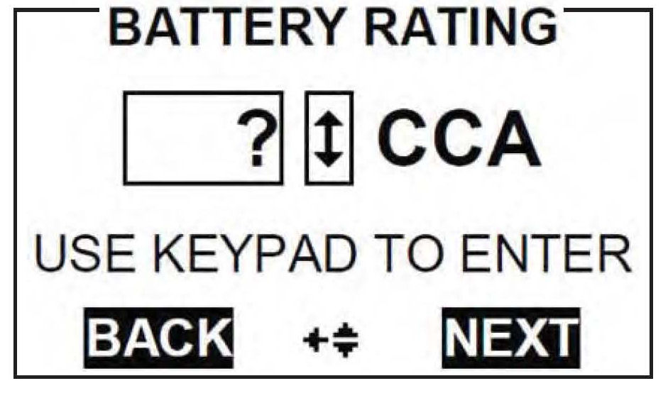
12. Enter the battery's CCA, and press NEXT to begin the battery testing.
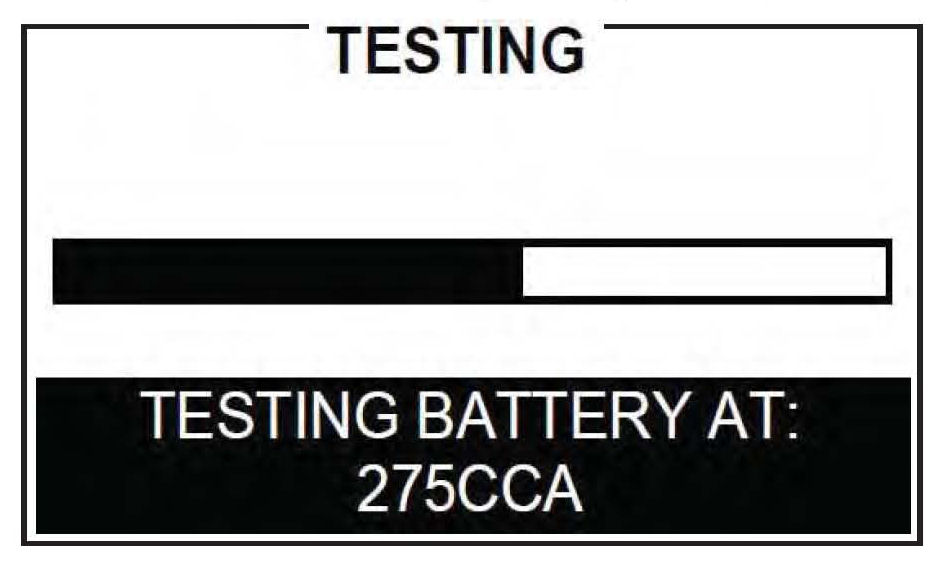
13. Wait until the initial battery testing is complete.
14. Zero the amp clamp following the on-screen instructions, making sure the clamp jaws are completely closed during the procedure.
*15. Place the clamp around the positive (+) alternator cable. This will be simple on most models, but on some it may be difficult because of obstructions or tight spaces.
NOTE:
^ Testing is done at the B+ cable to help rule out other factors in the vehicle's charging system and to increase testing accuracy.
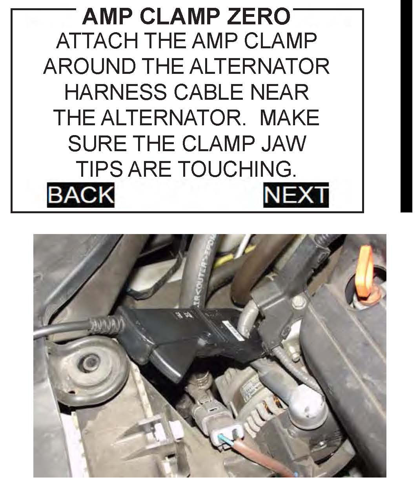
^ Make sure the amp clamp is clear of any moving engine parts.*
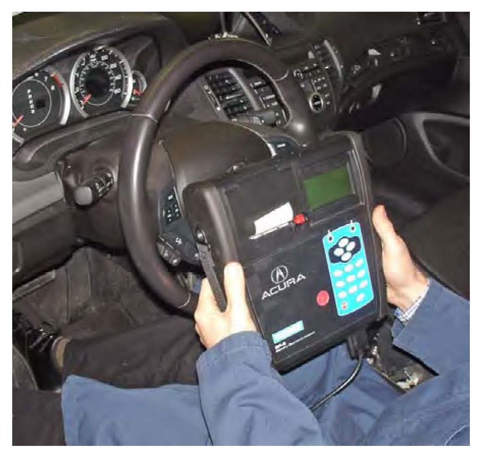
16. Remove the control module from the top of the GR8, and take it into the vehicle. Press NEXT to continue.
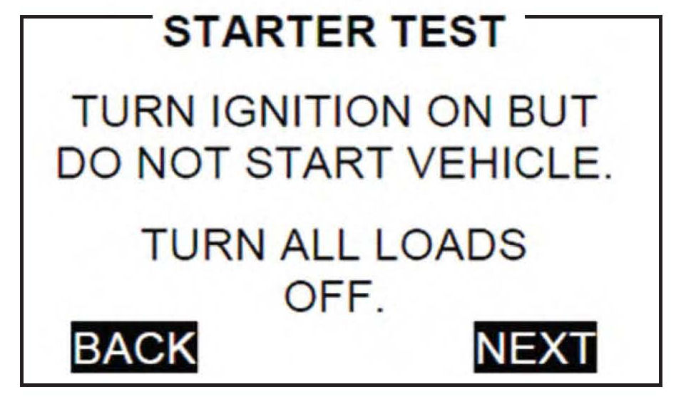
17. When prompted, turn the ignition switch to ON (II). Make sure all electrical loads are off at this time then press NEXT.
18. Start the engine, and follow the prompts on the next few screens.
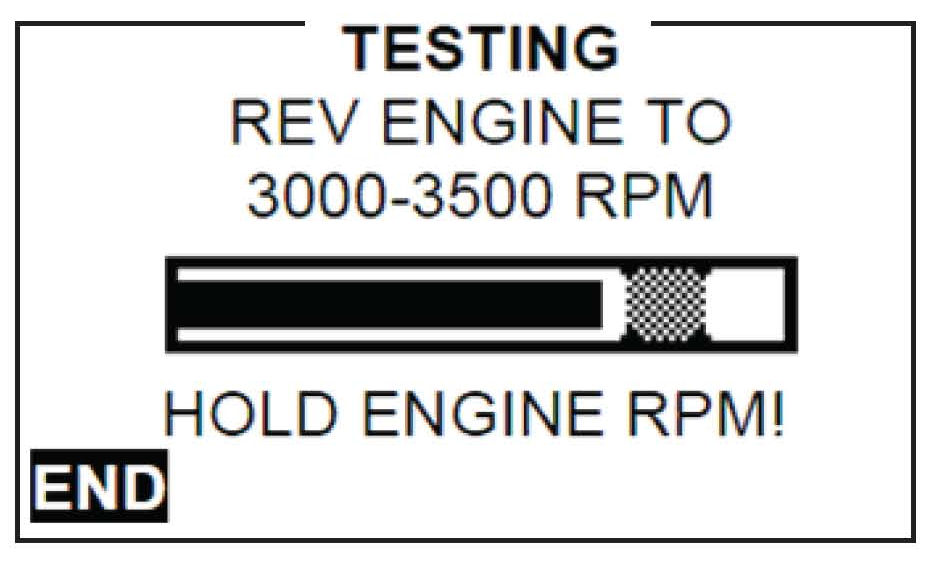
19. When prompted, rev the engine to 3,000-3,500 rpm until the tester tells you to HOLD the rpm level.
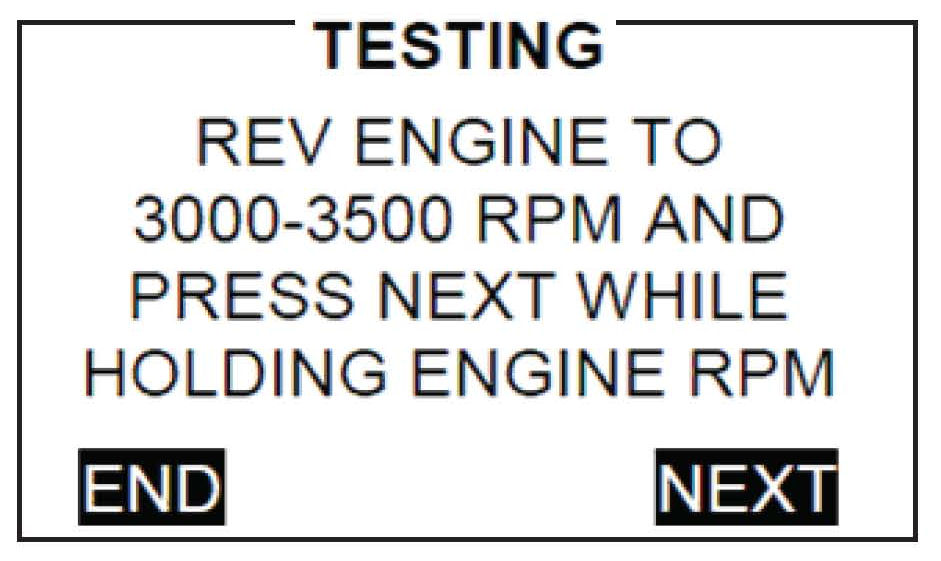
NOTE:
If you do not rev the vehicle within the first 10 seconds, or the tool cannot detect the engine speed, you will have to rev the engine to 3,000-3,500 rpm, hold at that rpm level, and hit NEXT to continue.
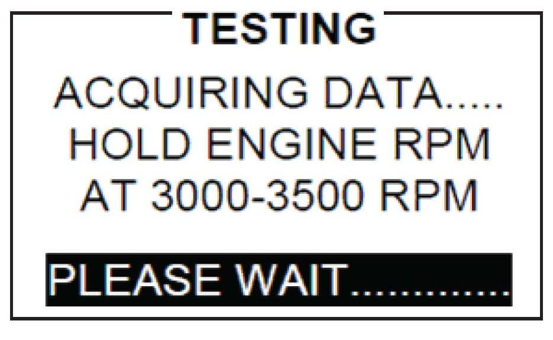
20. While holding the rpm level, the tester will acquire data. Continue to closely follow the prompts until the test is complete.
21. Turn the ignition switch to LOCK (0), and press NEXT to continue.
22. Place the GR8 control module back on the GR8, and press NEXT to display the results.
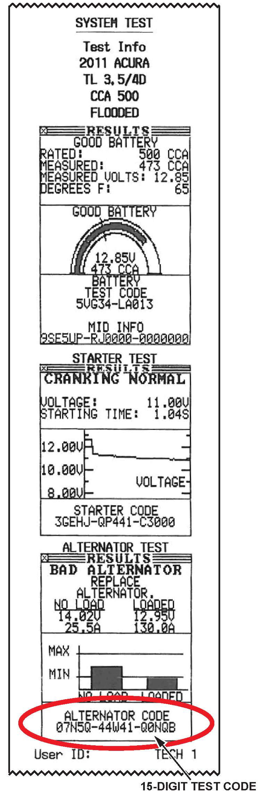
23. Press PRINT to print the results.

Disclaimer